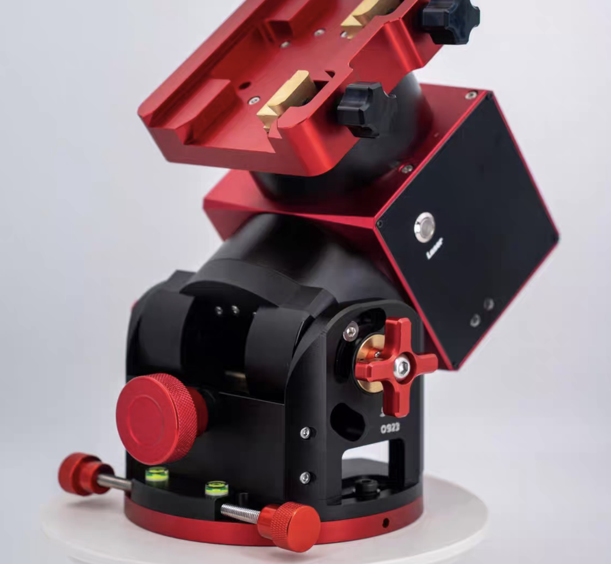
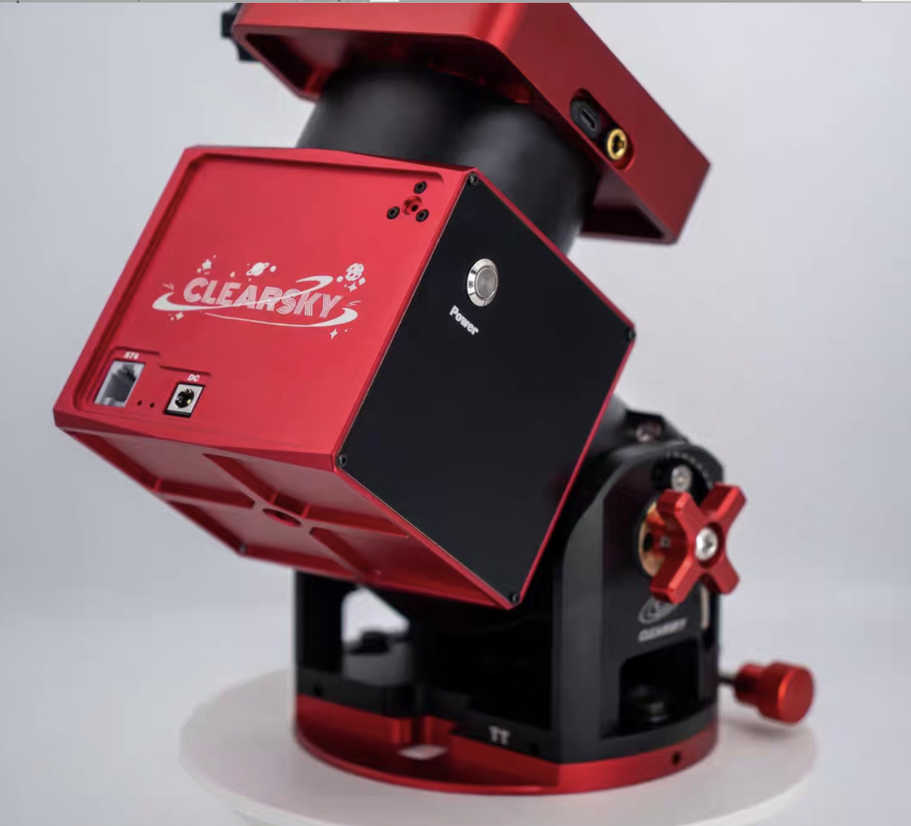
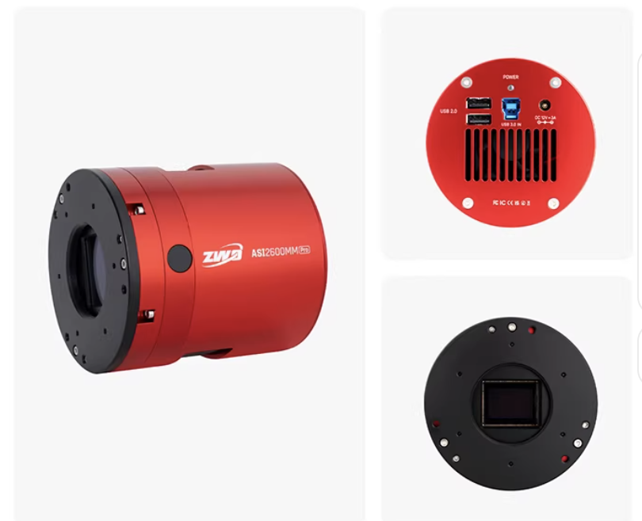
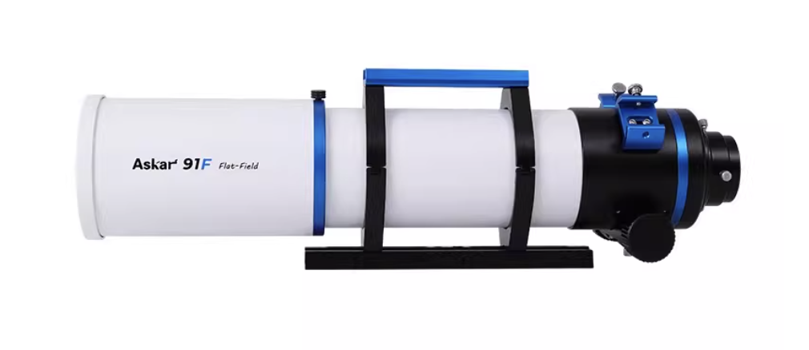
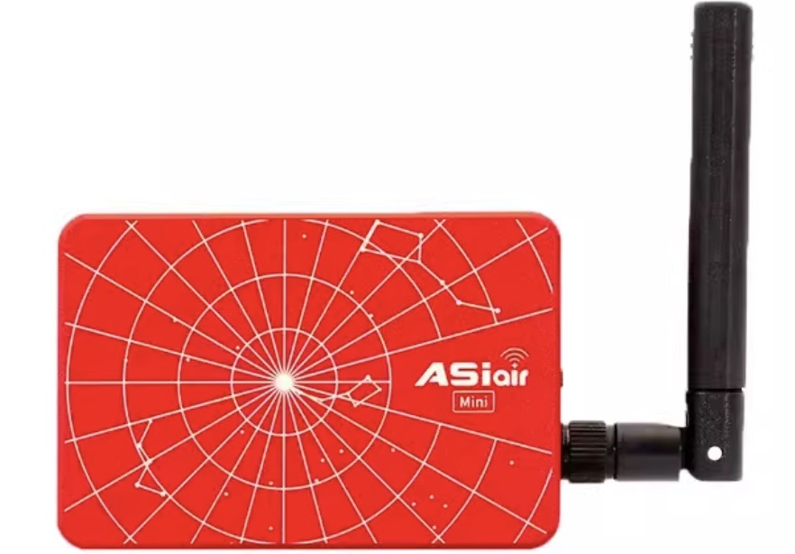
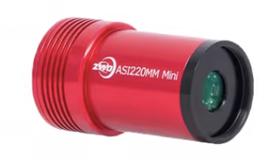
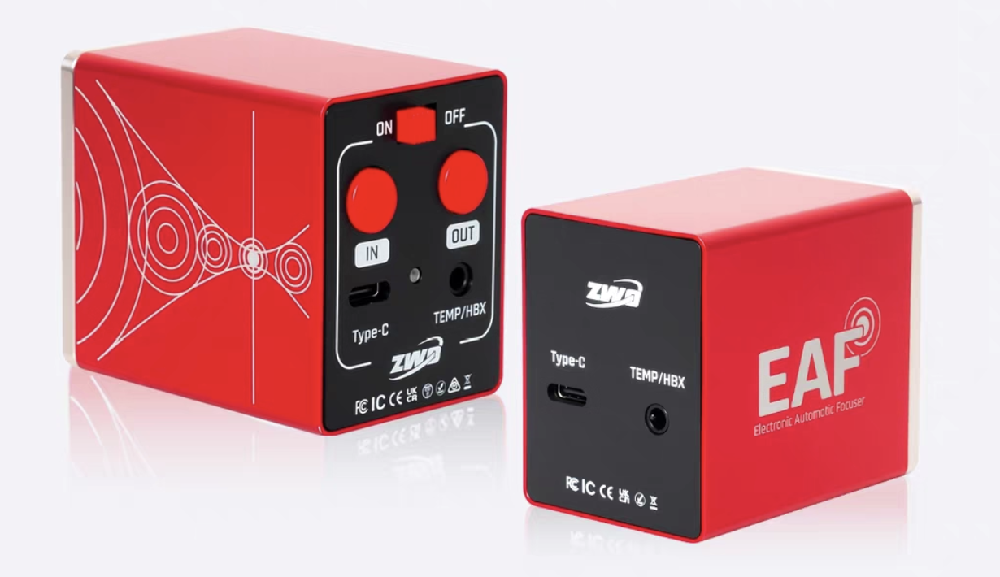
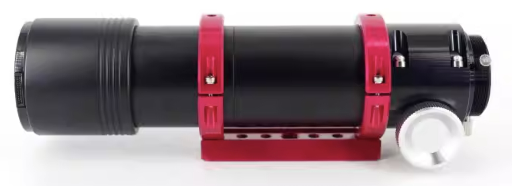

加入我们
如果你也对这个烧钱且费力的项目感兴趣.....那就让我来先为你介绍一下拍摄的设备
赤道仪

晴空 ST17-R

赤道仪在天文摄影中的作用，就是让相机“跟着星星一起走”。因为地球一直在转，相应的，星空也一直在缓慢的变化。如果不用赤道仪，星星在长曝光里会被拉成一条线，变成星轨。
相机

ZWO 2600MC Pro
普通相机和冷冻相机皆可，冷冻相机对于常规相机的升级点在于热噪点的减少。这个在“一些碎碎念”中会详细讲。
主镜

锐星 91F
主镜负责把宇宙中极其微弱的星光尽可能多地收集并精确聚焦，决定了你能拍到多少亮度、多少细节以及画面的整体视角。
天文盒子

ZWO ASIAIR Mini Box
可以说是新时代天文摄影最大的革新之一，作为整个系统的“大脑”。通过手机即可控制相机、赤道仪、导星、调焦、滤镜轮等，实现自动对焦、自动导星、自动曝光和拍摄序列。免去了以往需要使用电脑复杂程序的繁琐步骤。
导星相机

ZWO 220 Mini
寻星相机的作用是“盯住一颗星”，把星点的偏移实时反馈给赤道仪做微调修正。 这样长时间曝光时星点才不会漂移，画面也更容易堆栈出清晰细节。
电调焦

ZWO EAF
电调焦负责精确控制焦点位置。夜晚温差变化会让焦点慢慢跑掉， 有了电调焦就能远程微调甚至自动对焦，让星点更圆、细节更锐。
寻星镜

2047 导星镜
寻星镜相当于导星系统的“小望远镜”，专门给寻星相机提供更清晰的导星视野。 它不负责最终成像，只负责稳定追踪，让主镜安心长曝收集微弱光线。
如何进行一次拍摄
在把自己和设备安全地带到拍摄地点，并完成器材组装后，就可以打开 ASIAIR，开始正式的拍摄流程。
首先连接 ASIAIR 的 WiFi，进入控制界面，确认赤道仪、主相机、导星相机、自动调焦器等设备都已经正常识别。 随后输入对应的设备参数，例如相机增益、制冷温度、防结露设置等。完成这些准备后，就可以开始拍摄前最重要的几个步骤。
对焦
将望远镜先对准一片有足够星点的天空，打开预览功能，先进行粗略对焦，让画面中的星星从一团模糊的光斑逐渐变成清晰的星点。
完成初步对焦后，可以直接使用 AF（自动对焦）功能。自动调焦器会控制调焦座来回移动，并根据星点大小自动寻找最佳焦点位置。最终的目标是让星点尽可能小、尽可能锐利，这样后面的导星和正式拍摄才会更加稳定。
由于我使用的是折射镜配合彩色相机，所以流程相对简单一些，不需要像黑白相机那样分别考虑多个通道，也不需要像牛顿反射镜那样额外处理准直问题。只要焦点准确，星点通常就会比较干净。
对极轴
对完焦之后，下一步就是对极轴。极轴校准的目的，是让赤道仪的转轴尽可能平行于地球自转轴，这样在长时间曝光时，设备才能准确跟踪星空的运动。
在 ASIAIR 中打开极轴校准功能后，系统会自动拍摄几张照片并进行解析，然后提示你当前极轴偏离了多少，以及应该往哪个方向调整。此时根据屏幕提示，慢慢调节赤道仪的方位和高度螺丝，让误差逐步减小。
一般来说，不需要一开始就追求极限精度，但至少要把极轴误差控制到一个比较小的范围内。否则后面即使导星正常，长时间曝光时星点仍然容易被拉长。
自动寻星与构图
极轴校准完成后，就可以在 ASIAIR 中搜索目标天体，比如星系、星云或星团，然后点击自动寻星。赤道仪会自动把望远镜转到目标附近，再通过拍照解析把目标居中。
居中完成后，需要检查构图是否符合预期。可以看看目标的位置是否太靠边，周围有没有想保留的恒星区域，画面的方向是否自然。如果构图不满意，可以手动微调，再重新解析一次。
导星
构图完成后，就可以进入导星步骤。导星的作用是让导星相机持续监测一颗恒星的位置，并不断修正赤道仪的微小误差，从而让主相机在长曝光过程中保持更稳定的跟踪。
在导星界面选择合适的星点后，先进行导星校准。校准成功后，观察导星曲线和误差数值是否正常。如果导星精度较差，有可能是焦点不准、极轴不够准，或者当晚有薄云、水汽和大气扰动影响。
开始正式拍摄
确认对焦正常、极轴合格、构图满意、导星稳定之后，就可以进入正式拍摄阶段了。因为我使用的是彩色相机，所以拍摄流程会比黑白相机更直接，不需要分别拍摄 L、R、G、B 四个通道，只需要设置好单张曝光时间、增益和重复张数即可。
例如，如果计划总曝光时间为两个小时，而单张曝光为 300 秒，那么就可以直接设置拍摄 24 张。之后设备就会按照计划自动连续拍摄。
拍摄结束后的校准帧
正式拍摄完成后，还需要补拍校准帧。对于彩色相机来说，通常至少要拍摄平场和偏置场，有时也会拍暗场。
平场用来校正灰尘阴影、暗角和光路亮度不均；偏置场用来记录相机本身的读出噪声；暗场则主要用于校正长曝光下的热噪声。因为彩色相机只有一个通道，所以这些校准帧的拍摄会比黑白相机省事不少。
最后
完成全部拍摄后，让赤道仪回到归零位，再断开电源、拆卸设备并整理现场。回家之后，把素材导入电脑，进行校准、堆叠和后期处理，一次完整的深空拍摄才算真正结束。
评论